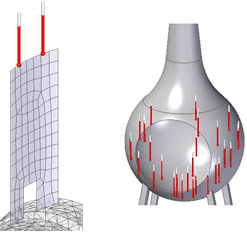
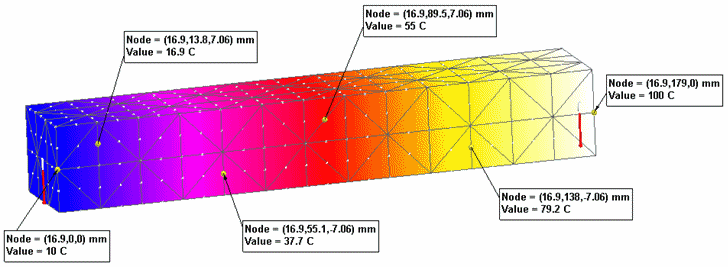
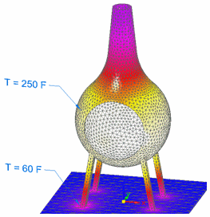
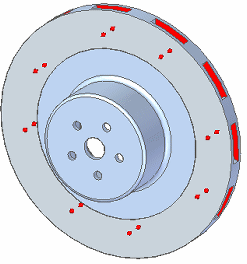
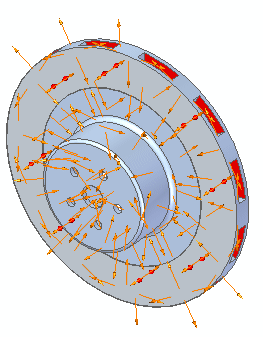
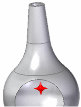
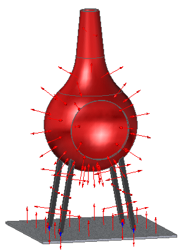
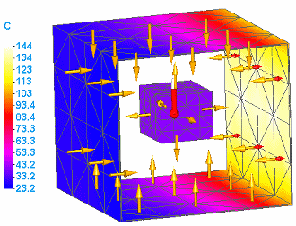
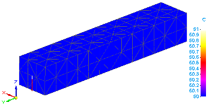
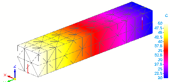

Thermal loads
The following load types can be used in thermal studies, such as steady state or transient heat transfer studies, and in thermal coupled studies:
-
Temperature loads, to apply a constant temperature to individual entities in the model.
-
Heat Flux loads, to conduct heat in a part or sheet metal model.
-
Heat Generation loads, to conduct heat in an assembly model
For basic information about conduction, convection, and radiation, see the Heat transfer concepts section in the Thermal analysis help topic.
The thermal load commands are available in the Thermal Loads group on the ribbon, and on the shortcut menu in the Simulation pane. These commands are used to define all of the boundary conditions—both the loads and the constraints—in a thermal study.
Before you place a load, you can set options for it using the Loads command bar. You also can specify advanced options for convection and radiation loads in the Thermal Load Options dialog box, and for transient heat transfer studies using the Transient Heat Options dialog box.
 Temperature loads
Temperature loads
In thermal studies and coupled studies, you can use the Thermal Loads group→Temperature command to study the gradient thermal conditions when a fixed temperature is applied continuously at equilibrium.
Use the Temperature load command when:
-
You want to apply different temperature loads.
-
You want to apply a temperature load to selected entities or to an entire body.
-
The time it takes to reach thermal equilibrium is not what you want to study.
A constant temperature can result in an inflow of heat into the model when adjacent nodes have a lower temperature. It can lead to an outflow of heat from the model when adjacent nodes have a higher temperature.
-
Geometry—You can select one or more features, faces, edges, corners, and points. In assembly models, you also can select bodies. In frame models, you can select nodes and curves. You can apply the load to entities of the same type, to mixed entities, and to entities that have other loads applied to them.

-
Value—Use the dynamic input box to specify a temperature. The default units are degrees Fahrenheit or Celsius. Zero and negative values are allowed.
-
Load distribution—The temperature load value is not distributed. If you select multiple entities, the temperature that you specify is applied to each of the selected entities.
Example:If you select two faces and enter a temperature value of 100 degrees, then a 100 degree load is applied to each face.
When a temperature load is placed on opposing ends (in this example,10 C and 100 C), the heat energy travels through conduction across the bar.

This model shows the temperature distribution results from two thermal temperature loads and one convection load applied to nodes and elements.

You also can use the Body Temperature command in the Body Loads group in heat transfer studies:
-
To provide an initial temperature estimate to speed calculations in NX Nastran.
-
As a required load for studies involving radiation.
-
As a required load for a transient heat transfer study to define the default initial temperature for the analysis. For a part model, a body temperature load is added automatically based on the Default Initial Temperature assigned in the Transient Heat Options dialog box. For an assembly model, you must select the Body Temperature command to specify the temperature for the bodies included in the study.
 Heat Flux loads
Heat Flux loads
Use the Heat Flux load command to measure the rate at which thermal energy is transferred through a unit area (surface, curve, edge, node, or point). The Heat Flux command defines a heat power, heat generation, or heat transfer load.
-
Geometry—In part and sheet metal, you can select faces, surfaces, edges, corners, points, or features. If you select multiple entities, they must be of the same type. In a frame model, you can select the lines representing the beams.
-
Load distribution—You can select the Total Load option
 on the command bar to divide the load value among the entities, instead of applying
the total load value to each entity.
on the command bar to divide the load value among the entities, instead of applying
the total load value to each entity. -
Value—Use the dynamic input box to specify the heat flux value and unit (heat power/unit area). For total loads, the default units are W. For distributed loads, the units are based on the entity type you select:
Entity
Total
Distributed
Point
W (Watt)
W
Edge
W
W/m
Face
W
W/m²
Feature
W
W/m²
A positive value indicates heat entering the model entity. A negative value indicates heat exiting the model entity.
When you use a heat flux or heat generation load, you must define a heat dissipation mechanism, such as a convection load or a temperature load.
A heat flux load is applied to the brake pad surfaces on both sides of this model of a rotor.

To dissipate heat, a convection load is applied to all of the surfaces of the brake rotor except for the surfaces where the heat flux load is applied.

 Heat Generation loads
Heat Generation loads
In an assembly model, use the Heat Generation command in the Thermal Loads group to define a heat power, heat generation, or heat transfer load for whole bodies. You can apply a heat generation load to bodies or components where another load already exists.
A heat generation load measures the rate at which thermal energy is transferred through a unit volume (a body or component). Typically, this heat must be conducted to the body boundaries and removed by convection or radiation heat transfer.
-
Geometry—You can select bodies in an assembly. Use QuickPick to select individual components or design bodies within the assembly.

-
Load distribution—You can select the Total Load option
on the command bar to divide the load value among the entities, instead of applying
the total load value to each entity. -
Value—Use the dynamic input box to specify the heat power per unit volume. For total loads, the default units are W. For distributed loads, the units are Power/Area (W/m³).
A positive value indicates heat entering the model entity. A negative value indicates heat exiting the model entity.
This assembly model of an electrical component contains two design bodies: a heat source (the button in the center) and a heat sink (the body with tabbed fins).

-
A heat generation load is applied to the heat source (A).
-
A heat flux load is applied to the surfaces that reflect the heat from the heat source (B).
-
To dissipate heat from the model, a free convection load is applied to the entire heat sink (C) using the Selection Type=Feature.
 Convection loads
Convection loads
A convection load measures the exchange of thermal energy when a gas or fluid moves from one surface to another surface or to its surroundings due to a temperature differential.
The Convection command in the Thermal Loads group defines a free convection load. Use a free convection load to evaluate heat transfer due to natural convection.
Natural convection occurs when the flow of a gas or liquid is induced by gravitational differences in densities resulting from temperature changes. An example of a natural convection load is the exchange of air through a glass window.
When the heat transfer process is forced by some external method, such as by a fan, it is referred to as forced convection.
Free Convection
-
Geometry—You can select faces, edges, corners, and features. You can apply the load to a mix of geometric entities by changing the Selection Type on the command bar.
-
Values—Free convection loads require two values:
-
Film Coefficient—Also known as a heat transfer coefficient or a convection coefficient, this value represents the rate at which a fluid or gas transfers heat, such as when the top surface of a circuit board freely convects to its surroundings. The film coefficient is influenced by the density, viscosity, and velocity of the fluid or gas.
The default units are derived from the units defined in the file properties, for example, 1 W/m²K. If you type the value using different units, they are converted to the default document units.
Zero and negative values are not allowed.
Example:Film coefficient values vary widely with the surface material that fluids and gases pass over or through. The following table illustrates the range of free convection values.
Fluid or gas (free convection mode)
Application
Typical coefficient values (units)
(BTU / hr-ft²F)
(W/m²K)
Air
Natural convection
N/A
5 to 25
Air
Forced convection
N/A
20 to 300
Air
Room to outside air transfer, through a typical glass window
0.1 to 0.5
0.5 to 2.5
Water
Flow through a pipe
0.5 to 20
20 to 100
Liquids
Liquids inside and outside tubes
18 to 176
50 to 100
Gases
Gases at atmospheric pressure inside and outside tubes in a heat exchanger
0.2 to 3.5
2 to 25
Boiling water
In a pool or container
440 to 6,200
2,500 to 3,500
Flowing through a tube
880 to 17,600
5,000 to 100,000
Condensation of water vapor, at 1 atmosphere
Vertical surfaces
700 to 2,000
4,000 to 11,300
-
Ambient Temperature—Also referred to as surrounding or bulk temperature. Heat is convected to or from the surface toward the specified ambient temperature.
The default value is 20 degrees Celsius. Zero and negative values are allowed.
-
-
Options
-
You can specify advanced options for free convection loads in the Thermal Load Options dialog box.
-
You can change the default direction of a convection load using the Flip Direction button on the command bar. A convection load on a solid face or surface is applied in the positive normal direction by default. You can use the button to flip the load to the negative normal direction (the opposite side).
-
In this model of a fire pit, a temperature load in the interior surface sets the temperature for a wood burning fire. Convection loads also are defined for the following:
-
The two interior surfaces of the chimney.
-
The exterior surfaces of the fire pit.
-
The support legs.
-
The top face of the base plate.

The default direction of the load is normal to the selected surface or face. You can use the Flip Direction button on the command bar to reverse the load direction.
If a convection load is applied to an edge, the load direction is fixed in the +Z direction.
Convection loads are not available for beam mesh types in structural frame models.
Radiation loads
Thermal radiation is the heat transfer due to electromagnetic radiation emitted by the surface of a body. The heat transfer occurs when the emitted radiation strikes another surface or body and is absorbed, reflected, or transmitted to another entity.
Any body with a temperature above 0 degrees Kelvin emits radiation, as do all heated solids and liquids, as well as some heated gasses.
Use the Radiation command in the Thermal Loads group to apply either of the following radiation load types:
- Radiation to Space
-
A radiation load that defines the radiant exchange between a face or surface and infinite (blackbody) space.
- Enclosure Radiation
-
A radiation load that defines the radiant exchange among a group of surface elements.
Note:Enclosure radiation loads in assemblies can transfer heat even when assembly connectors are not defined.
Examples of the two types of radiation include a camp fire (radiation to space) or a microwave (enclosure radiation).
The following information is required to define radiation loads:
-
Geometry—You can use the Selection Type list on the command bar to specify the type of geometry you want to select, and then select individual faces or surfaces, entire features, edges, or points in the graphics window. If you are using a surface mesh, you may want to use the Edges/Corners option to select lines and points on the surface.
Note:Radiation loads are not available for beam mesh types in structural frame models.
-
Radiation Type and Radiation Values—Use the Radiation Load Options dialog box to choose the radiation load type (Radiation to Space or Enclosure Radiation), and to enter radiation load values (surface emissivity, absorptivity, ambient temperature, view factor, number of cavities or enclosures, and view factor).
You can open the dialog box using the Options button on the Loads command bar.
The default radiation load type is Radiation to Space.
Note:When solving an enclosure radiation load applied to models with relatively small geometry and small mesh elements, the ZTOL option on the Radiation Load Options dialog box enables the study to solve without fatal errors.
For example, use the ZTOL parameter to resolve fatal processing errors similar to the following:
-
Load distribution—Radiation loads are distributed uniformly across the selected geometry.
-
Body temperature load—This is required for all radiation loads. Use the Body Temperature command in the Body Loads group to specify a base temperature at any time before meshing. This ensures that all nodes and elements are assigned a default temperature, even when no load is specifically applied to them.
See Body Temperature loads in the Structural and body loads help topic.
-
Options—You can specify advanced options for enclosure radiation loads in the Thermal Load Options dialog box.
The following loads are applied to this simplified model of an oven. The sides are removed to better show the interior.
-
A body temperature load sets the default temperature.
-
A heat flux load applied to the right wall of the oven represents the heat source.
-
An enclosure radiation load applied to the interior walls represents the heated oven walls.
-
A second enclosure radiation load applied to the object in the middle of the oven represents food cooking and emitting its own heat.

Thermal loads used as constraints
The commands in the Thermal Loads group also are used as thermal constraints in thermal studies. A thermal constraint applies a constant temperature to geometry or to nodes. The Temperature, Convection, Heat Flux, and Heat Generation loads can be used as thermal constraints to conduct heat across a model and to dissipate heat.
In a steady state heat transfer study, when a thermal load is applied on one entity (edge, point, surface, component), the results show the part conducting the heat until it is at thermal equilibrium.

To show a temperature gradient across the part, you can apply a second Temperature load as a thermal constraint, using a different temperature value on an opposite entity.

To learn how this works, refer to the Defining thermal studies section, in the Thermal studies help topic.
How do I
Define a loadActivity: Apply a bearing load
Activity: Apply a centrifugal load
Activity: Apply a torque load
Activity: Apply a body temperature load
Learn more
Creating and using loadsLoad labels and symbols
Structural and body loads
External loads (imported loads)
Loads directional steering wheel
Look up more details
Loads command barThermal Load Options dialog box
Radiation Load Options dialog box
Color dialog box
Graphic Symbol Size dialog box